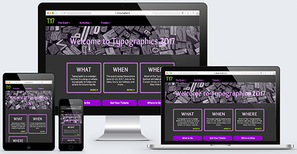

Case Study:
Typographics
The Project
This website was the final project for my responsive web design class at Anne Arundel Community College. As with most final projects, there was a lot to do.
In a make-believe world, I was the website designer hired to design and program the 2017 Typographics Conference. For this website, my client (the instructor) supplied me with a 20-page document of information and more than 50 image files, including JPG's, SVG's, PNG's, and GIF's. I had to use all the supplied information and images as well as apply responsive techniques — such as image swapping, HDPI images, forms, and flex display — in the final product. And I had three weeks to do it in.
Planning & Design
Though provided with a lot of information and materials from my client, I still had a lot to do. Unlike in the real world, I had total creative control over the website. The first thing I had to was figure out how to organize it, meaning I needed to read the 20-page document. After reading the document I broke the website down into four sections: the home page, the event section, the activities section, and the tickets section.
Each section, except the home page, contained subpages. Under the event section, a visitor will find information about the event, the event schedule, the event sponsors, and a contact form. The activities section has subpages for workshops, tours, the book fair, and speakers. Finally, the tickets section contains a page for the different ticket packages available, an order form, and the two conference policies purchasers must agree to are broken out into separate pages.
However, I wasn't done planning after establishing my site hierarchy and sitemap. I then created wireframes and a brand (logo, color scheme, and font choices). I don't want to go into too much detail but I had two challenges for myself in this stage: don't crazy with color (Looking back on past projects, I felt I was overusing color, especially blue. This time, I wanted to do something different.) and establish a layout pattern. I'm happy to say I accomplished both.
I chose a dark theme with a few colors to create a fun, modern tone and continued that feeling with my font choices. I actually went through a couple color schemes before I found one that I felt worked for the client. I'm glad I kept pushing myself instead of going with the first choice. In fact, I liked the effect so much I incorporated some of into my portfolio website. Plus, I established a pattern layout design that could utilize flex box CSS and be applied to most of the website's pages with minor tweaks.
Documentation for this stage can be viewed in this PDF package.
In this package, you find the sitemap and wireframes as well as my process for building the brand, including logo sketches. I don't consider myself a graphic designer so I found the logo design especially challenging. Knowing my weakness, I decided to keep it simple (and relevant) and use my "fun" font face to create a type-based logo. On the website, you'll see the logo in the top left corner of every page; it serves as a link to the home page. Normally, I would not use a logo alone to link back to the home page. However, going to the home page isn't necessary after initially landing on the site because it is a promotional page that directs visitors to certain pages for more information. It doesn't contain any unique information itself, so I felt it was OK to exclude the word "home" from the menu and use the logo instead.
Development
With all my planning done, transferring my design to code wasn't difficult. Despite all the materials supplied, however, I still had to create content of my own to work with the design. To do this, I created text-based logos (saved as SVG's) for sponsors or book fair vendors who were missing logos and used Create Commons Licensed photos and illustrations in the few areas I was lacking images. Why did I not create these images from scratch? Time. I only had 3 weeks to design, code, and troubleshoot a 16-page website. Though I was ahead of my instructor's milestones for the assignment. I still had a lot ahead of me.
Because this assignment wasn't challenging enough, I decided to create a dropdown menu that would work on mobile and use modals for the descriptions of the activities. These two jQuery-powered effects took a decent amount of time figure out how to code and make sure they worked how I needed them two. The dropdown menu respond works by clicking or touching the link in the navigation. Each dropdown box has a close link to hide the dropdown box if the user didn't mean to click on it. If navigate to the Workshops, Tours, or Book Fairs pages, you can view the modal effect. Clicking on the name of each brings up a window the the description and other relevant information for the specific workshop, tour, or book fair vendor. Clicking close will take the user back to the list page of each.
While these effects work, they are not (yet) accessible with a keyboard and I have not tested extensively on other operating systems or devices. The website holds up well on Apple devices and on Google Chrome, Safari, and Firefox browsers on Apple products. It worked well on the school's computer's, which were run on the Windows operating system. One of my goals is to learn alternatives to JavaScript so that if a device doesn't have it enabled, a function or effect can still execute.
Updates
A website is never done, even if it's a school project.
Per the requirements, I included a contact form and a registration form. Originally, these forms didn't work since that was outside the scope of the class. But I wanted to practice using JavaScript and forms so I went back and added some front end validation to both forms, passed the values to the confirmation page, and displayed the submitted values on the confirmation page. You can read about the process on my blog: Part 1, Part 2, Part 3.
Is what I did perfect? Does my JavaScript code follow preferred coding practices? No to both.
There are some things I would like to work on, and plan to do so on future projects. I will also improve how write my JavaScript code. I will get better, and so will my code. But at the moment, I'm proud of what I've accomplished.
Return to website gallery.